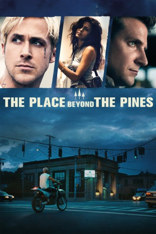
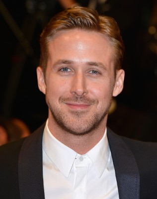
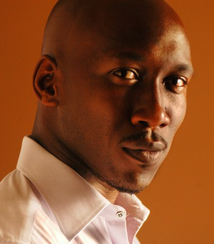
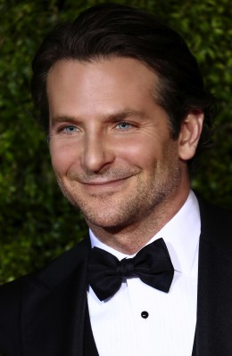
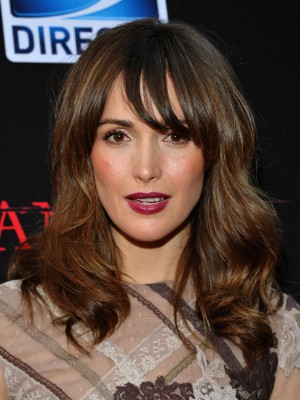
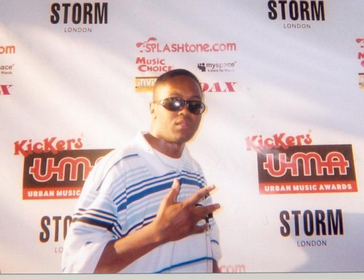

#1090 The Place Beyond the Pines
 
 IMDB-Wertung: 7.3 / 10
IMDB-Wertung: 7.3 / 10  Metascore: 68
Metascore: 68 
A mysterious and mythical motorcycle racer, Luke, (Ryan Gosling) drives out of a traveling carnival globe of death and whizzes through the backstreets of Schenectady, New York, desperately trying to connect with a former lover, Romina, (Eva Mendes) who recently and secretly gave birth to the stunt rider's son. In an attempt to provide for his new family, Luke quits the carnival life and commits a series of bank robberies aided by his superior riding ability. The stakes rise as Luke is put on a collision course with an ambitious police officer, Avery Cross, (Bradley Cooper) looking to quickly move up the ranks in a police department riddled with corruption. The sweeping drama unfolds over fifteen years as the sins of the past haunt the present days lives of two high school boys wrestling with the legacy they've inherited. The only refuge is found in the place beyond the pines.
Jahr: 2012
Dauer: 140 Minuten
FSK: 12
Land: USA Studio: Focus FeaturesTonspuren: DTS - ,
Untertitel: Deutsch,
Auflösung: 1080p (1920x800) Größe: 13926 MB
Genre: Krimi, Drama, Thriller
Regisseur: Derek Cianfrance
Drehbuch: Derek Cianfrance, Ben Coccio, Derek Cianfrance, Ben Coccio, Darius Marder
Soundtrack: Mike Patton
Darsteller:
-  Ryan Gosling als Luke
- Eva Mendes als Romina
- Olga Merediz als Malena
-  Mahershala Ali als Kofi
 Ben Mendelsohn als Robin
Ben Mendelsohn als Robin- Vanessa Thorpe als Court Officer
 Brian Smyj als Officer Jefferson
Brian Smyj als Officer Jefferson-  Bradley Cooper als Avery
- Gabe Fazio als Scott
-  Rose Byrne als Jennifer
 Harris Yulin als Al Cross
Harris Yulin als Al Cross Robert Clohessy als Chief Weirzbowski
Robert Clohessy als Chief Weirzbowski Bruce Greenwood als Bill Killcullen
Bruce Greenwood als Bill Killcullen Ray Liotta als Deluca
Ray Liotta als Deluca- Luke Pierucci als Doc Crowley
- Patrick Husted als Preacher
 Emory Cohen als AJ
Emory Cohen als AJ- Jefrey Pollock als Campaign Advisor
 Dane DeHaan als Jason
Dane DeHaan als Jason- Mark McCracken als Drug Busting Cop #1
- Whitney Hudson als Whitney
- Jeremie Carlson als Student , uncredited
-  Dj Nino Carta als Kofi's Brother , uncredited
- Ron Komora als News Photographer , uncredited
- Jennifer Lefsyk als Girl at Fairground , uncredited
- Michael Marino als Ari , uncredited
- Mark Musto als Strip Club Patron , uncredited
- Jim Powers als Altimont Carney , uncredited
- Daniel Rayome als Fairgoer , uncredited
- John Romeo als Fat Man in Tent , uncredited
- Nicole Signore als Bank Hostage , uncredited
- Kevin Craig West als Sergeant , uncredited
- Craig Van Hook als Jack
- Angelo Anthony Pizza als Baby Jason
- John Facci als Priest
- Tula als Robin's Dog
- Penny als Robin's Dog
- Cynthia Pelletier-Sullivan als Teller #1 - Bank #1
- Mackenzie Trainor als Teller #2 - Bank #1
- Nicole Califano als Teller #3 - Bank #1
- Shannon Plumb als Lady in Ice Cream Shop
- Tracey Agustin als Teller #1 - Bank #2
- Ean Egas als Teller #2 - Bank #2
- Bob Dieterich als Banker Outside Bank #2
- Thomas Mattice als Booking Officer
- Adam Nowicki als Arresting Officer
- Mark J. Caruso als Court Lawyer
- G. Douglas Griset als Judge #1
- Gail Martino als Teller - Banker #3
- Dorothy Rutherford als Mother at Home
Datei: X:\2012(N-Z)\Place Beyond the Pines, The (2012, FSK12, 1920x800).mkv seit 19.05.2015
Festplatte: HD 2012(N-Z)-2013(A-H)
 Es gibt insgesamt 138 Filme in der Gruppe '2012(N-Z)'
Es gibt insgesamt 138 Filme in der Gruppe '2012(N-Z)'